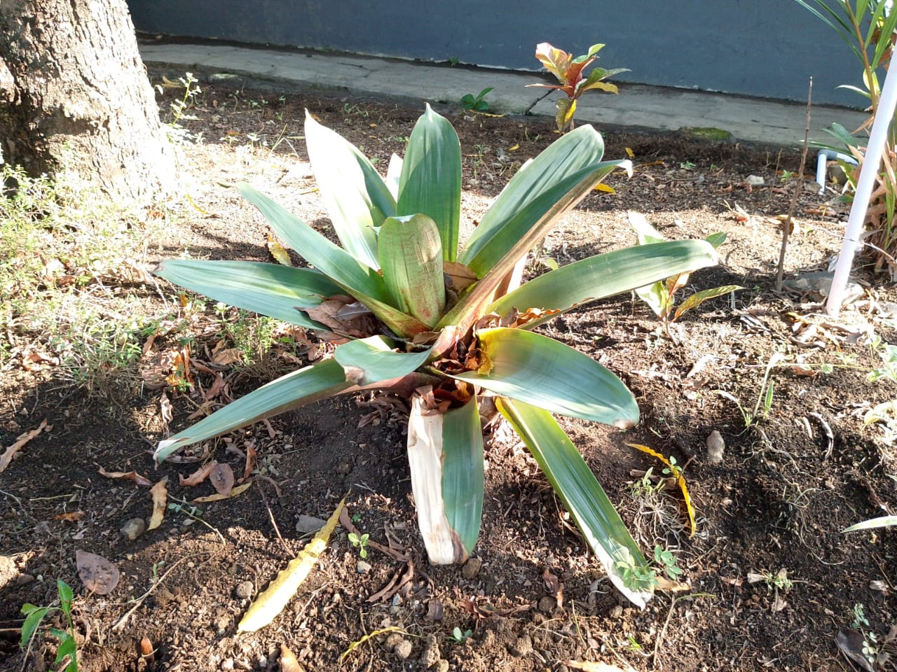

Bromelia Giant (Alcantarea imperialis

Sejarah Tanaman Bromelia Giant
Alcantarea imperialis, dikenal sebagai Bromelia Giant, Silver Plum, atau Rubra, adalah bromelia endemik Brasil yang pertama kali dideskripsikan pada tahun 1888 oleh Élie-Abel Carrière sebagai Vriesea imperialis. Tanaman ini mampu bertahan di kondisi panas dan berbatu dengan sedikit air, hanya berbunga sekali dalam hidupnya dengan tangkai bunga yang dramatis, dan setelah bunga layu, tunas baru akan muncul.
Klasifikasi Ilmiah
- Nama Lokal: Bromelia Giant
- Nama Ilmiah: Alcantarea imperialis
- Famili: Bromeliaceae.
- Kerajaan: Plantae
- Divisi: Tracheophyta
- Ordo: apoales
Manfaat Bromelia Giant
- Sebagai Tanaman Hias: Memiliki bentuk roset besar dengan warna yang mencolok, cocok untuk mempercantik taman, halaman, maupun interior.
- Meningkatkan Kualitas Udara: Bromelia dapat membantu menyerap polutan udara dan menghasilkan oksigen, sehingga membuat udara lebih segar
- Habitat Mikro: Daunnya yang melengkung bisa menampung air hujan, menjadi tempat hidup serangga kecil, katak, bahkan burung kecil.
- potensi kesehatan & penelitian: Beberapa spesies bromeliad mengandung senyawa antioksidan, antibakteri, dan antijamur, meski yang paling terkenal adalah nanas (juga termasuk bromeliad).
Ciri-ciri
- Ukuran Besar: Daunnya tumbuh roset (melingkar seperti kipas) dengan diameter bisa mencapai lebih dari 1 meter.
- Daun Tebal & Kaku: Umumnya berbentuk memanjang, ujungnya meruncing, dengan tekstur keras. Ada yang halus, ada juga yang berduri di tepi daun.
- Warna Daun Bervariasi: Hijau, merah, ungu, bahkan kombinasi belang atau corak unik yang membuatnya menarik sebagai tanaman hias
- Mampu Menampung Air: Bagian tengah roset daunnya membentuk “tandon” alami yang bisa menampung air hujan.
Sumber Informasi